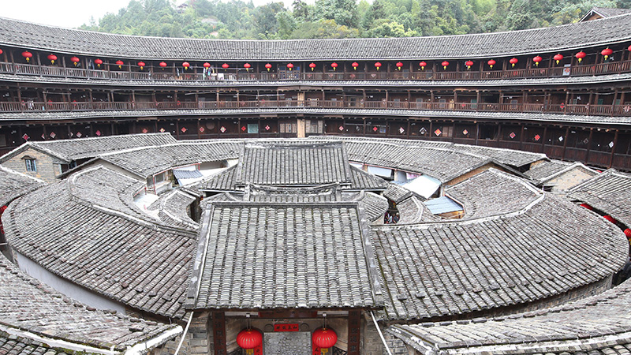
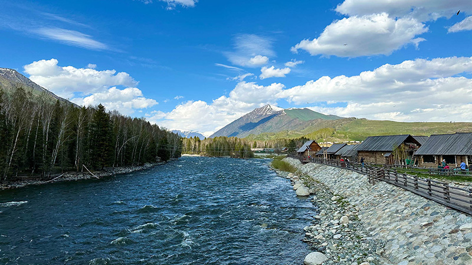
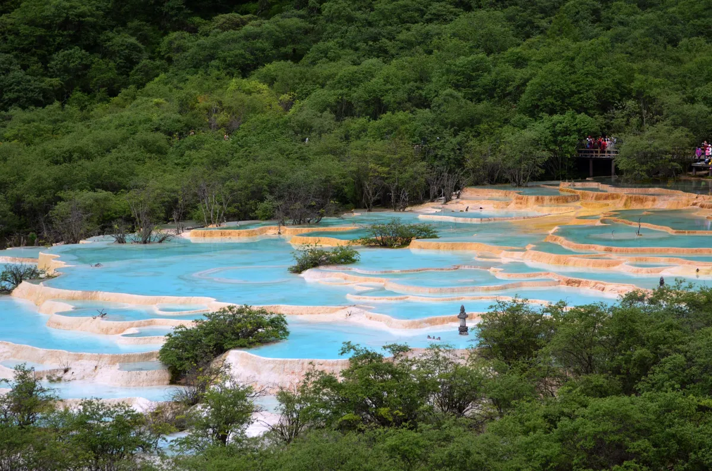
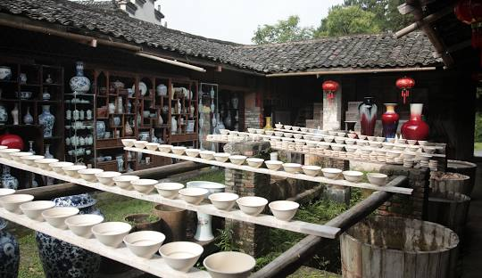

Montanhas de Changbai, Província de Jilin
São dezesseis picos de duzentos metros acima do nível do mar em volta de um lago chamado Tianchi, ou o Lago do Céu, o mantendo limpo e isolado do resto do mundo. Apesar de ser difícil de ver o lago inteiro, devido à neblina e às nuvens, ainda há vistas belíssimas para se ver nas montanhas, como quatro zonas naturais distintas, ou a Cachoeira de Changbai.

Tulou, Província de Fujian
Fujian Tulou é um símbolo da cultura Hakka chinesa, rica na beleza da arquitetura, e também uma misteriosa habitação na montanha. Experience, aqui, o Chuxi Tulou, Hongkeng Tulou, Gaobei Tulou, Yanxiang lou, Zhenfu lou... todas incluídas nos Patrimônios Culturais da UNESCO. Aproveite, também, a cultura Hakka, sua culinária... não é uma Cidade Proibida, mas... talvez seja até mais interessante.

Vilas de Miao de Xijiang
"Miao" é um termo que se refere a alguns grupos étnicos do sul da China, vivendo primariamente nas montanhas do sudeste da China. A vila de Xijiang, então, é a maior vila da China que agrupa esses povos, e também a maior do mundo. É uma vila construída contra as montanhas, com o Rio de Ershui correndo em seu pé calmamente. Estar aqui é ter um gostinho de uma vida rural pacata, calma e com uma vista linda todos os dias, envolto de um povo alegre e hospitaleiro, feliz em te mostrar sua cultura, pratos típicos, entre outros.

Xinjiang, Região Autônoma
Xianjing difere das outras localidades dessa lista, pois não é um único ponto turístico, mas uma província inteira. Portanto, independentemente do local eme que você vá, ou da parte do ano que será sua viagem, Xianjing é linda. O Lago de Salimu oferece uma vista que condiz à expectativa, com uma água limpa e transparente. E, interessantemente, o Bazar Internacional de Xianjing integra a cultura islâmica, arquitetura, entretimento, e outros, na China. Há também a cultura típica dos Uígures a apreciar... e muitas, muitas outras coisas.

Travertinos de Huanglong
Por quase quatro quilômetros, piscinas quentes naturalmente formadas fluem gentilmente entre florestas e montanhas ásperas. Os Travertinos de Huanglong fala de uma história geológica surpreendente, mas não é preciso saber desta para apreciar o local: já é possível tirar incríveis proveitos olhando apenas para suas águas azul claras, descendo como se fossem escamas, fato que conquistou ao rio o título de Dragão Amarelo. Aliás, esse não é seu único título: também é um patrimônio mundial pela UNESCO.

Jingdezhen, Província de Jiangxi
Jingdezhen é uma cidade conhecida por seu porcelanato, se tornando uma obrigação a visitar para quem quer que seja que curta essa arte. Há, inclusive, um museu que fala sobre a história de várias cerâmicas, a história geral da cerâmica, e até mesmo a fabricação de diferentes tipos de porcelanas. Aliás! A arquitetura, também, é fortemente relacionada à porcelana!
